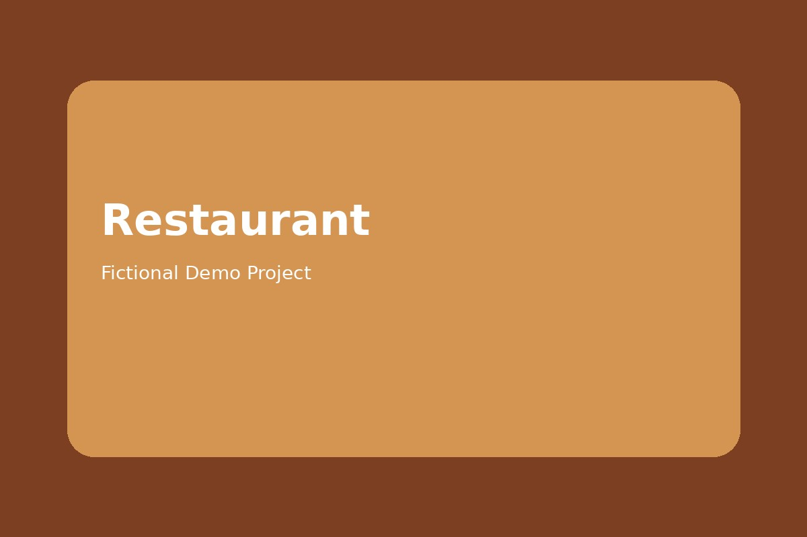

Website Production / Portfolio
Webサイト制作で あなたのビジネスを もっと伝わる形へ
中小企業・店舗向けのホームページ制作、LP制作、スマホ対応、SEO基本設定まで対応します。
□
Responsive Design
スマホ・タブレット対応
⌕
SEO Basic
SEO内部対策を標準対応
↗
Landing Page
集客・成約に強いLP制作
✓
安心のサポート
公開後も安心のアフターサポート
About
Tomo
大阪を拠点に活動しているWeb制作者です。店舗・企業向けホームページ制作を中心に、シンプルで見やすく、スマートフォンでも使いやすいWebサイトを制作しています。
01
ホームページ制作
02
ランディングページ制作
03
レスポンシブ対応
04
SEO基本設定・公開サポート
Works
制作デモサイト
業種別に提案しやすいデモサイトを掲載しています。
Skills
対応スキル
HTML5
CSS3
JavaScript
Responsive
GitHub Pages
SEO Basic
Flow
制作の流れ
01
相談
制作目的や必要ページを確認します。
02
ヒアリング
掲載内容、写真、参考サイトを整理します。
03
制作
デザインとコーディングを進めます。
04
修正・公開
確認後、公開URLまたはファイル一式で納品します。
Price
料金目安
LP制作
¥30,000〜目安：1〜2週間
ホームページ制作
¥50,000〜目安：2〜4週間
保守・更新
¥5,000〜月額更新・軽微修正
FAQ
よくある質問
スマホ対応はできますか？
はい。スマートフォンでも見やすいレスポンシブ対応で制作します。
修正はできますか？
内容に応じて修正対応可能です。納品前に確認いただきます。
公開まで対応できますか？
GitHub Pagesでの公開や、ファイル納品に対応できます。
文章や写真がまだありません。
仮文章・仮画像で制作し、後から差し替える形でも進められます。
Contact
Webサイト制作のご相談はこちら
クラウドワークス・ランサーズ・ココナラなど、各サービスからご相談いただけます。